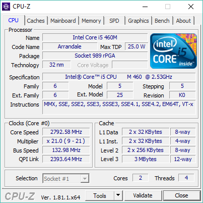
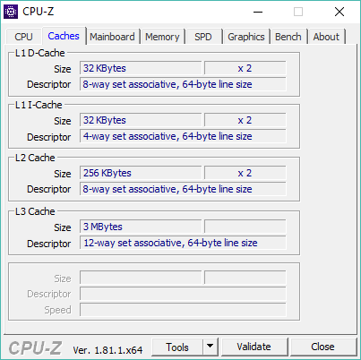
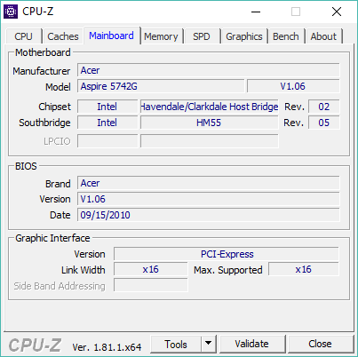
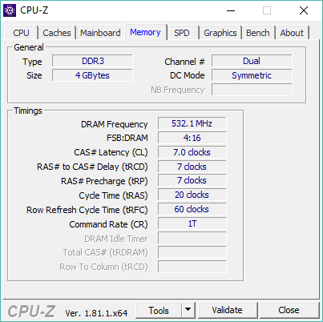
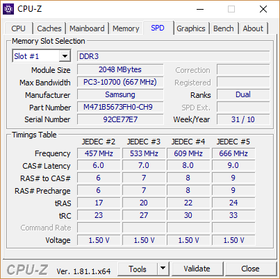
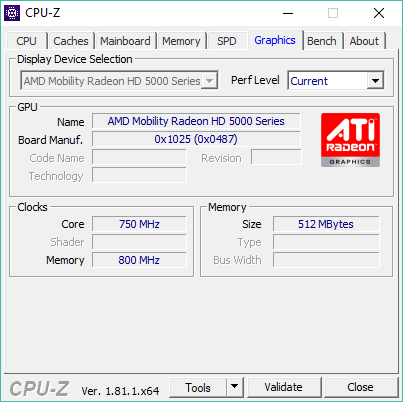
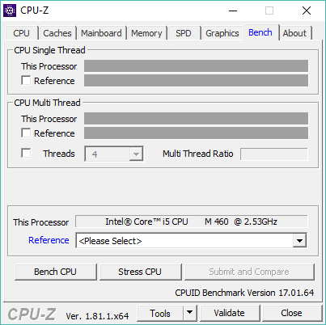
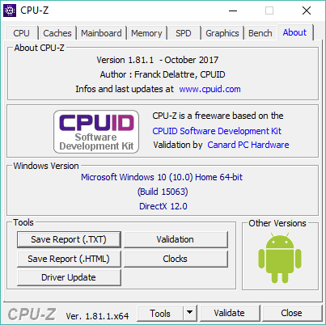

CPU-Z 1.80.2CPU-Z – это бесплатная утилита отображающая техническую информацию о компьютере, в основном о процессоре. Детально рассмотрим все её возможности Первая вкладка «CPU» отображает информацию о процессоре  На данной вкладке можно увидеть Наименование процессора, наименование ядра, максимальный объем теплоотдачи, измеряемый в ватах. Тип разъёма (Socket). Техпроцесс процессора, напряжение питания процессора. Семейство, модель. В нижней части содержится наиболее полезная информация. Это, текущая частота процессора, в моем случае это 2792,58 MHz, ниже показан множитель и опорная частота шины. В правой части окна показана информация о кэш памяти процессора на трех уровнях. В самом низу показано количество ядер процессора и количество потоков, т.е. В моем случае 2 физических ядра и два виртуальных, дающих в сумме 4 потока. На второй вкладке, а именно вкладке «Caches» более подробно показана информация о кэш памяти  На третьей вкладке «Mainboard» содержится информация о материнской плате  В верху указано наименование материнской платы, наименование чипсета, архитектура.В средней части окна содержится информация о версии BIOSа номер версии и дата выпуска.В самом низу информация о интерфейсе видеокарты в моем случае это PCI-Express. Четвертая вкладка «Memory» показывает информацию об оперативной памяти.  А конкретно, тип, количество каналов. И более подробно: частота памяти, задержки, время циклов и д.р. Следующая вкладка «SPD» отображает информацию о рекомендованных настройках оперативной памяти, но зачастую они могут не отображаться.  Вкладка «Graphics» отображает информацию о видеокарте  В окне показано наименование видеочипа, процессор видеокарты, производитель и его логотип, частота, а также частота памяти и её объем. Предпоследняя вкладка «Bench»  Стресс тест, для проверки стабильности работы процессора при его «разгоне». Последняя вкладка «About»  Содержит информацию о программе, о версии, а также информация о текущей версии Windows, DirectX. Так же имеется ссылка на официальный сайт программы www.cpuid.com, на котором можно скачать официальную версию программы. На сайте www.cpuz.ru можно скачать и русифицированную версию данной программы. Вывод: эта программа показывает достаточно большое и полное количество технических характеристик вашего персонального компьютера. И хоть она и призвана отображать данные только о вашем центральном процессоре, но также ей можно воспользоваться для просмотра таких характеристик как оперативная память, материнская плата, графический адаптер. НИУ МГСУ, 2018 Мещеряков Александр Геннадьевич ИЭУИС 4-1 |